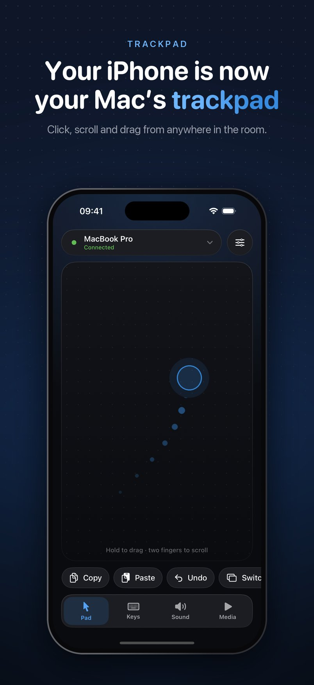
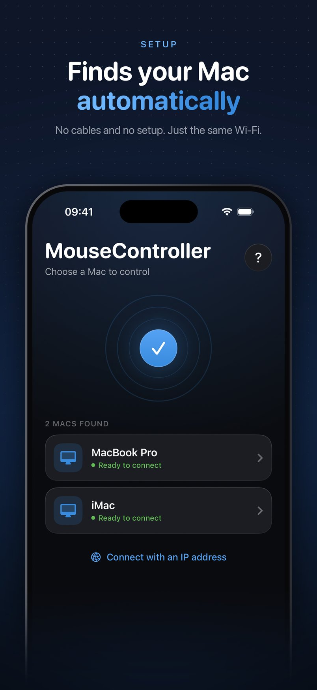
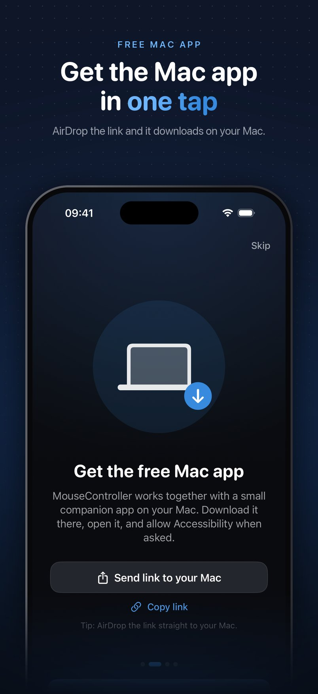

Mouse Controller
iPhone spremeni v brezžično sledilno ploščico in tipkovnico za Mac.
Tvoj Mac z drugega konca sobe
Mouse Controller ti omogoča, da Mac upravljaš z iPhona prek lokalnega omrežja. Telefon uporabi kot sledilno ploščico s kavča, med predstavitvijo ali ko je Mac priključen na televizijo, brez dodatne opreme.
Sestavljen je iz dveh delov: aplikacije za iPhone, ki jo držiš v roki, s sledilno ploščico, tipkovnico in upravljanjem glasbe, ter majhne spremljevalne aplikacije za Mac, ki teče v menijski vrstici in izvaja premike kazalca, tipke in glasnost. Pogovarjata se neposredno prek tvojega Wi-Fi omrežja ali osebne dostopne točke. Nič ne gre prek interneta.
Posnetki zaslona






Poglej, kako deluje
Funkcije
- Gladek kazalec z nastavljivo hitrostjo in pospeškom
- Dotik za klik, dvojni dotik, dotik z dvema prstoma za desni klik
- Pridrži in premakni za vlečenje in spuščanje
- Drsenje z dvema prstoma z zagonom, v obe smeri
- Razpri prste za povečavo, poteg s tremi prsti za Mission Control in namizja
- Tipkanje na Macu, s tipkami Esc, Tab in puščicami
- Kopiraj, prilepi, razveljavi, preklopnik aplikacij in Spotlight z enim dotikom
- Velik drsnik za glasnost, utišanje, predvajaj/ustavi in preskok skladb
- Sam najde tvoj Mac, IP naslov ni potreben
- Enkratna koda za seznanitev in šifrirana povezava
- Ko Wi-Fi pade, se sam znova poveže
- Kratek uvodni ogled in seznam, kaj preveriti, ko se Mac ne prikaže
- Brezplačna aplikacija za Mac v Mac App Storu, povezavo pošlješ na Mac z AirDropom
- Hitrost kazalca, pospešek, haptika in vse kretnje v nastavitvah
Poveži iPhone z Macom
- Namesti obe aplikaciji. Mouse Controller potrebuje dve brezplačni aplikaciji, eno na vsaki napravi: MouseController za iPhone iz App Stora in MouseController za Mac iz Mac App Stora. Uvodni ogled v aplikaciji za iPhone lahko povezavo za Mac pošlje na Mac tudi z AirDropom. Aplikacijo za Mac odpri v mapi Applications in v menijski vrstici se pokaže ikona kazalca.
- Dovoli Dostopnost. Prvič te macOS vpraša za dovoljenje. Klikni Open System Settings in vklopi MouseController pod Privacy & Security → Accessibility. Nato aplikacijo za Mac zapri prek ikone v menijski vrstici in jo znova odpri. Brez tega Mac ne upošteva nobenega vnosa.
- Poveži se v isto omrežje. iPhone in Mac poveži v isto Wi-Fi omrežje ali pa Mac poveži na osebno dostopno točko iPhona.
- Odpri aplikacijo na iPhonu (na začetnem zaslonu se imenuje MouseController) in tapni Dovoli, ko vpraša za iskanje naprav v lokalnem omrežju.
- Izberi svoj Mac na seznamu pod Najdeno v bližini.
- Vpiši kodo za seznanitev v polja, točno tako, kot je prikazana v oknu aplikacije za Mac ali v njenem meniju. To narediš samo enkrat za vsak Mac.
To je vse. Premakni prst po sledilni ploščici in kazalec se premakne. Zavihki za tipke, zvok in medije odprejo tipkovnico, glasnost in upravljanje glasbe, gumb za nastavitve pa pokaže vse kretnje in hitrost kazalca.
Nekaj ne deluje? Rešitve so na strani Podpora (v angleščini).
Zahteve
- iPhone z iOS 17.6 ali novejšim
- Mac z macOS 14.6 ali novejšim
- Oba v istem Wi-Fi omrežju ali na osebni dostopni točki
- Najnovejša različica obeh aplikacij
Ocene in mnenja
-
Absolutely worth it
This app is genuinely amazing. It works really well, feels smooth and polished, and makes controlling your computer from your phone incredibly convenient. It’s one of those apps that actually feels useful instead of being just a gimmick. I’d honestly be willing to pay for it if it wasn’t free. Definitely deserves 5 stars!
-
Useful app!!!
A very well made and useful app. I'm glad i downloaded it!
Mnenja so v izvirnem jeziku, tako kot so bila napisana v App Storu.